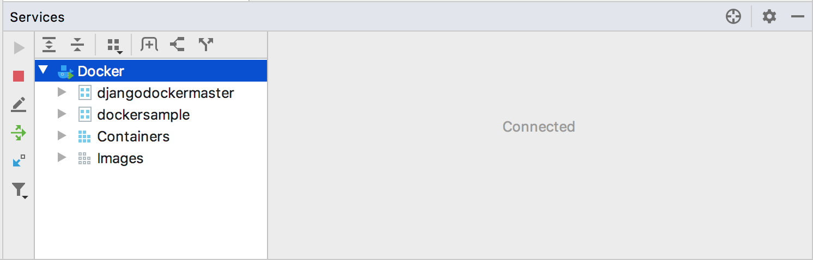

Fistly, open your Pycharm and configure the Docker daemon connection settings:
In the Settings/Preferences dialog Ctrl+Alt+S, select Build, Execution, Deployment | Docker.
Click The Add button to add a Docker configuration and specify how to connect to the Docker daemon. The connection settings depend on your Docker version and operating system. For more information, see Docker configuration. The Connection successful message should appear at the bottom of the dialog.
The configured Docker connection should appear in the Services tool window (View | Tool Windows | Services or Alt+8 ). Select the Docker node Docker node, and click The Connect button, or select Connect from the context menu.
The Services tool window (View | Tool Windows | Services or Alt+8) enables you to pull and push images, create and run containers, manage Docker Compose, and so on. As with other tool windows, you can start typing the name of an image or container to highlight the matching items.
https://www.jetbrains.com/help/pycharm/docker.html#managing-images